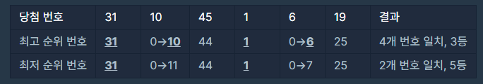
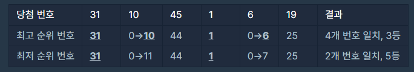

프로그래머스 : 로또의 최고 순위와 최저 순위
주어진 배열에서 숫자가 일치하는 경우의 수를 구하는 문제입니다.
문제 설명
로또 6/45(이하 '로또'로 표기)는 1부터 45까지의 숫자 중 6개를 찍어서 맞히는 대표적인 복권입니다. 아래는 로또의 순위를 정하는 방식입니다.
로또를 구매한 민우는 당첨 번호 발표일을 학수고대하고 있었습니다. 하지만, 민우의 동생이 로또에 낙서를 하여, 일부 번호를 알아볼 수 없게 되었습니다.
당첨 번호 발표 후, 민우는 자신이 구매했던 로또로 당첨이 가능했던 최고 순위와 최저 순위를 알아보고 싶어 졌습니다.
알아볼 수 없는 번호를 0으로 표기하기로 하고, 민우가 구매한 로또 번호 6개가 44, 1, 0, 0, 31 25라고 가정해보겠습니다.
당첨 번호 6개가 31, 10, 45, 1, 6, 19라면, 당첨 가능한 최고 순위와 최저 순위의 한 예는 아래와 같습니다.

규칙
이때, 당첨 가능한 최고 순위와 최저 순위를 차례대로 배열에 담아서 return 하도록 solution 함수를 완성해주세요.
제한사항
lottos는 길이 6인 정수 배열입니다.
lottos의 모든 원소는 0 이상 45 이하인 정수입니다.
- 0은 알아볼 수 없는 숫자를 의미합니다.
- 0을 제외한 다른 숫자들은 lottos에 2개 이상 담겨있지 않습니다.
- lottos의 원소들은 정렬되어 있지 않을 수도 있습니다.
win_nums은 길이 6인 정수 배열입니다.
win_nums의 모든 원소는 1 이상 45 이하인 정수입니다.
- win_nums에는 같은 숫자가 2개 이상 담겨있지 않습니다.
- win_nums의 원소들은 정렬되어 있지 않을 수도 있습니다.
로또를 구매한 민우는 당첨 번호 발표일을 학수고대하고 있었습니다. 하지만, 민우의 동생이 로또에 낙서를 하여, 일부 번호를 알아볼 수 없게 되었습니다.
당첨 번호 발표 후, 민우는 자신이 구매했던 로또로 당첨이 가능했던 최고 순위와 최저 순위를 알아보고 싶어 졌습니다.
알아볼 수 없는 번호를 0으로 표기하기로 하고, 민우가 구매한 로또 번호 6개가 44, 1, 0, 0, 31 25라고 가정해보겠습니다.
당첨 번호 6개가 31, 10, 45, 1, 6, 19라면, 당첨 가능한 최고 순위와 최저 순위의 한 예는 아래와 같습니다.

규칙
- 1. 순서와 상관없이, 구매한 로또에 당첨 번호와 일치하는 번호가 있으면 맞힌 걸로 인정됩니다.
- 2. 알아볼 수 없는 두 개의 번호를 각각 10, 6이라고 가정하면 3등에 당첨될 수 있습니다.
- - 3등을 만드는 다른 방법들도 존재합니다. 하지만, 2등 이상으로 만드는 것은 불가능합니다.
- 3. 알아볼 수 없는 두 개의 번호를 각각 11, 7이라고 가정하면 5등에 당첨될 수 있습니다.
- -5등을 만드는 다른 방법들도 존재합니다. 하지만, 6등(낙첨)으로 만드는 것은 불가능합니다.
이때, 당첨 가능한 최고 순위와 최저 순위를 차례대로 배열에 담아서 return 하도록 solution 함수를 완성해주세요.
제한사항
lottos는 길이 6인 정수 배열입니다.
lottos의 모든 원소는 0 이상 45 이하인 정수입니다.
- 0은 알아볼 수 없는 숫자를 의미합니다.
- 0을 제외한 다른 숫자들은 lottos에 2개 이상 담겨있지 않습니다.
- lottos의 원소들은 정렬되어 있지 않을 수도 있습니다.
win_nums은 길이 6인 정수 배열입니다.
win_nums의 모든 원소는 1 이상 45 이하인 정수입니다.
- win_nums에는 같은 숫자가 2개 이상 담겨있지 않습니다.
- win_nums의 원소들은 정렬되어 있지 않을 수도 있습니다.
입출력 예
| lottos | win_nums | 결과 |
|---|---|---|
| [44, 1, 0, 0, 31, 25] | [31, 10, 45, 1, 6, 19] | [3, 5] |
| [0, 0, 0, 0, 0, 0] | [38, 19, 20, 40, 15, 25] | [1, 6] |
| [45, 4, 35, 20, 3, 9] | [20, 9, 3, 45, 4, 35] | [1, 1] |
1. 해설
소스보기
function solution(lottos, win_nums) {
let rank = 0,
joker = 0;
lottos.forEach((e) => {
if(win_nums.includes(e)){
rank++;
} else if(e == 0){
joker++;
}
})
if(joker == 6){
return [1,6];
} else if(joker == 0) {
return rank == 0 ? [6, 6] : [7-(rank+joker), 7-rank];
} else {
return rank == 0 ? [7-joker, 6] : [7-(rank+joker), 7-rank];
}
}
최대 순위와 최소 순위를 구하면 되기 때문에 반복문을 사용해
※ 개념
설명
2. 다른 풀이
소스보기
해설 설명
※ 개념
설명